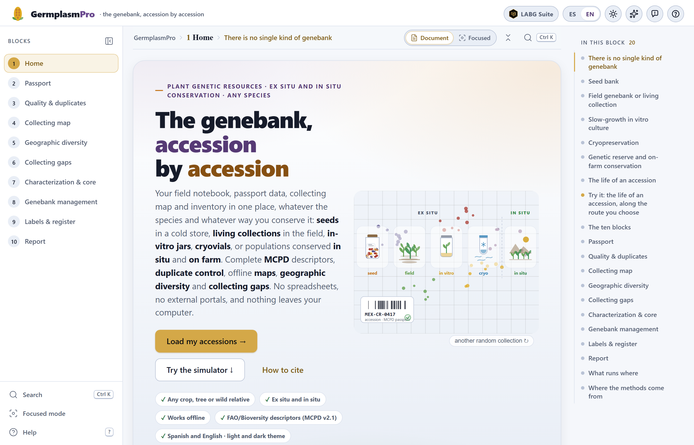
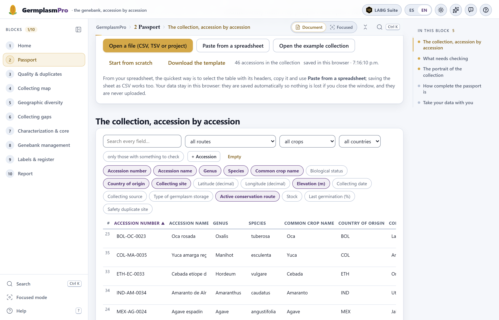
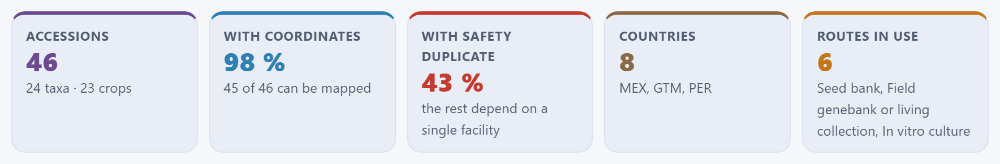

The citation of the program is the same one given by the How to cite button on the app’s home page. The program can also be used online, without installing anything, at https://luisangelbg.github.io/GermplasmPro/.
GermplasmPro runs entirely inside your browser. The passport data, characterization and management records you load are read on your computer and are never sent to any server; the collection is kept in that same browser’s local storage so that it is not lost when you close the window. You can work with the coordinates of sensitive populations or with data from custodian families without anything leaving your machine, and without the internet: the maps use geometries included in the program.
The illustrations, diagrams and screenshots in this manual are original: they were generated with the program itself or with code written for the manual. The example collection is fictitious: the sites are real localities with approximate coordinates, but the accessions, people, stocks and dates are invented, and the example characterization is generated at random with a fixed seed. The viability constants included are those published for Zea mays; for other species they are an editable starting point. The map outlines are from Natural Earth (public domain).
The manual follows the same order as the app: ten numbered blocks that appear, from top to bottom, in the sidebar on the left. Each chapter explains one block and carries its number —Chapter 6 is Block 6, and its sections, figures and tables are numbered 6.1, 6.2…—. Each one begins with the idea from plant genetic resources management that the block needs, goes on to what the screen calculates and how to read it, and ends with what is worth checking before moving on. This introduction has no number: its sections run I.1, I.2…
The block’s color appears on the opening page of its chapter, on the number of each section, on the tab at the edge of the page and in the table of contents, and it is the same as in the strip on the cover. That way you can tell at a glance which part of the app you are in.
| Block | Name in the app | What it does |
|---|---|---|
| 1 | Home | Home page, the five kinds of genebank, seed behavior and the simulator “the life of an accession”, which follows the material and its diversity for decades |
| 2 | Passport | Bring in the list of accessions (file, paste or template), recognize the columns as MCPD v2.1 descriptors, validate them, edit them, portray the collection and export it |
| 3 | Quality & duplicates | Coordinates that do not fall in the declared country, untidy names and catalogs, corrections proposed for your approval and the same collection entered twice |
| 4 | Collecting map | The accessions on the map, offline, colored by species, elevation, year or route; how many fall in each state and each country |
| 5 | Geographic diversity | Richness, diversity indices and Hill numbers per geographic unit, rarefaction, richness estimators, similarity between regions, Mantel test and elevation gradient |
| 6 | Collecting gaps | The grid of what is missing, a transparent priority index, the route for the next collecting trip, the risks to what you already have and the minimum set by complementarity |
| 7 | Characterization & core | Mixed morphological descriptors, Gower distance, principal coordinates, clustering and a validated core collection |
| 8 | Genebank management | Viability lot by lot with the Ellis and Roberts equation, what has to be done and when on each route, how many plants and seeds to regenerate, and the workload for the next 25 years |
| 9 | Labels & register | Labels with Code 128 barcodes and QR codes, in formats measured in millimeters; sowing lists, distribution slips and the register |
| 10 | Report | The collection status report, with the methods written out, to print or save as PDF; the .zip package and the passport in MCPD and in Darwin Core |
Clarifications and practical tips that save time.
What can change your decisions if overlooked.
The idea behind a calculation, without unnecessary formulas.
A case worked step by step with the example collection.
| If the result falls in this case… | then this is the recommended reading. |
These are guides for interpretation, not laws: what you know about your species, your genebank and your sites always comes first.
| Written like this | Means |
|---|---|
| Open the example collection | A button, checkbox or menu of the app, with its text as it appears on screen in English. |
| Block 3›Is it the same collection twice? | A path: open the first item and look for the second inside it. |
ACCENUMB, GP_CONS, .csv | A descriptor key, a file name or a value typed as it stands. Keys beginning with GP_ are the GermplasmPro extension, not part of MCPD. |
| MEX-ZM-0039 · Tuxpeño de la costa | An accession from the example collection, with its number and its name as they appear in the table of Block 2. |
| 25,000 m · 98 % · 0.14 | Thousands separated with a comma, decimals with a point and a space before the percent sign, as in the app in English. |
The results in the text come from running the app with the example collection of Block 2 (46 accessions, with their planted errors) and, in Block 7, with the example characterization of 12 descriptors. The examples have a fixed seed and the calculations are deterministic: with those data you will see the same numbers. If a chapter starts from another state, such as the corrected collection, it says so first.
What the program is, which questions from the daily work of a genebank it answers, what data it accepts and how to go through it from start to finish. It includes the five ideas that hold up everything else —the accession and its passport, the route each species needs, the safety duplicate, the two clocks of conservation, and what you have versus what you are missing— and an honest list of what the program does not do.
GermplasmPro is a platform for the daily work of a plant genetic resources collection from the field notebook to the report: it organizes the passport of each accession with the FAO/Bioversity multi-crop descriptors, finds errors and duplicates, draws the collecting map, measures geographic diversity, points out where collecting is still missing, builds a core collection from the characterization, projects the viability of each lot and warns what needs regenerating, prints labels with a barcode or QR code, and writes a report with the methods written out.
It works for any species and for every kind of genebank. Ex situ: the seed bank, the field genebank or living collection, slow-growth in vitro culture and cryopreservation; the DNA bank is recorded in the passport. In situ: the genetic reserve of crop wild relatives and conservation in the field of whoever sows it. A real collection almost always combines several of those routes, and the app handles them all at once. Maize and chayote turn up often on the screens and in this manual because they are good examples of two worlds —an orthodox seed that is kept in a jar and a crop that can only be conserved alive—, not because the program is meant for them.
Everything happens inside the browser. There is nothing to install, no programming is needed and the data do not leave the computer. It is written for genebank curators, field technicians, thesis students and those in charge of institutional or community collections: it knows that a passport almost always arrives from a spreadsheet with hand-typed headers, that the same collection is often there twice with the name spelled differently, that a longitude loses its sign when it passes from one program to another, that a lot that has gone years without a germination test is an invisible risk, and that an in situ plot nobody visits is also lost.
Each block of the app answers a question that anyone who manages a collection really asks. These are the questions, in the order in which the blocks are worked through:
| Block | The question | How it answers |
|---|---|---|
| 1 | Which kind of genebank suits my species? What happens to an accession over the years? | The five kinds of genebank, seed behavior and a simulator of viability and diversity over decades |
| 2 | What do I have, where did it come from and how is it conserved? Is my passport complete? | Reading the list, recognizing the columns, validation field by field and across fields, a portrait of the collection and completeness per descriptor |
| 3 | Are my data reliable? Do I have the same collection twice? | Coordinates against the country, names and catalogs, proposed corrections and pairs of possible duplicates with their score |
| 4 | Where did I collect? How many accessions are there per state and per country? | The offline collecting map, colored by species, elevation, year or route, and the tables by state and by country |
| 5 | Where is the diversity of my collection? How much is still left to find? | Richness and indices per geographic unit, rarefaction, richness estimators, similarity between regions and elevation gradient |
| 6 | Where do I go on the next collecting trip? What could I lose of what I already have? | The grid of gaps, the priority index, the collecting route, the risks to the collection and the minimum set |
| 7 | Which accessions are alike? Which do I keep if I cannot evaluate them all? | Gower distance with mixed data, principal coordinates, groups and a core collection with its validation |
| 8 | Which lot must be tested or regenerated, and when? How many plants do I sow? | Projected viability per lot, alerts and a work plan per route, calculation of plants and seeds, and the workload over 25 years |
| 9 | How do I identify each envelope, jar, pot or cryovial? How do I record what goes out? | Labels with Code 128 and QR, sowing lists, distribution slips and the register |
| 10 | How do I report on the state of the collection? How do I share the passport? | A report with written methods and references, a .zip package, the passport in MCPD and in Darwin Core |
You do not need to be a genebank curator to use the app, but there are five ideas that come back again and again. Understanding them turns the results from tables into decisions.
An accession is a distinct sample of a species that the genebank conserves and manages as a unit: a maize collection from one community, a potato clone, a wild population in its reserve. What makes it useful is not the material but what is known about it: what it is, where it came from, who collected it and when, what type of material it is and how it is conserved. That is the passport, and the FAO/Bioversity multi-crop passport descriptors (MCPD v2.1) are the way of writing it that every genebank and information system understands. The app recognizes its 42 descriptors and adds seven fields of its own, those beginning with GP_, for the active conservation route, the in situ site and custodian, the stock, the last germination test and the last regeneration. Every block reads from that passport; that is why Block 2 is the way in.
A seed bank only works for orthodox seed, which tolerates drying and freezing. Intermediate seed does not tolerate deep cold, recalcitrant seed tolerates neither drying nor freezing, and in vegetatively propagated crops the seed does not reproduce the clone. For them there are the field, the in vitro jar and liquid nitrogen, and nothing replaces in situ conservation, where the population keeps evolving. The app handles the five routes and adapts alerts and deadlines to each one; the label format (envelope, jar, cryovial, stake…) is your choice in Block 9.
The safety duplicate is a sample of the same accession kept at another institution, so that a fire, a long power cut or a pest does not take away the only specimen. The passport records it in DUPLSITE, and the app counts what share of the collection has one. The other duplicate, the accidental one —the same collection entered twice in the catalog, with the name spelled differently—, is the opposite: it protects nothing, inflates the collection and muddles the analyses. Telling one from the other, and finding the second before measuring diversity, is part of the work of Block 3.
The first is the clock of the material: seed ages in the store at a rate that depends on its moisture content and the temperature, which the Ellis and Roberts viability equation can project; field plants die, jars get contaminated, frozen explants only partly recover. The second is the clock of genetic integrity: each regeneration, each subculture and each generation in the field is a bottleneck that redraws the allele frequencies, and the rare alleles are the first to be lost. Hence the genebank rule: regenerate rarely and with many individuals. The simulator in Block 1 shows the two clocks side by side; Block 8 applies them to every lot in your collection.
A collection is worth the diversity it represents, and that diversity has a geography: it is spread across regions, elevations and sites. Block 5 measures how much there is where you have already collected and how much you are still missing with the same effort; Block 6 draws the grid of what has never been collected and proposes where to go, with a priority index whose components are visible and can be moved. In both cases the analysis is geographic and collection-based: it counts accessions, species and sites, not climate or soil.
.csv, .tsv or .txt file, pasted directly from a spreadsheet, typed into the guided template of the paste dialog or started blank. The headers may come in Spanish, in English or as the MCPD key: the app proposes which descriptor each column is and you confirm it..json, which brings back the collection exactly as it was, with its characterization and the settings of Blocks 3, 8 and 9..csv, in two versions: with the MCPD descriptors only, to send to any system, or complete, with the GP_ extension, so as not to lose the internal management. And the project as .json..csv tables of each block: the map points with their state and their cell, the diversity indices, the collecting route, the genebank work plan..html file that opens in any browser and can be printed or saved as PDF, with one section per analysis, the methods written from what was actually run, and their references; and a .zip with everything, including the passport in MCPD and in Darwin Core.A computer with a recent browser —Edge, Chrome, Firefox or Safari from the last two or three years— and the program folder. There is no installation: you copy the folder and open index.html with a double click. It also works from a USB stick and on a computer without internet, and online at https://luisangelbg.github.io/GermplasmPro/.
The accessions are saved automatically in the browser of that computer (in its local storage); next to the counter in Block 2 the time of the last save is shown, and when you open the app again the collection is still there; if the browser does not allow saving (full storage or a private window), it says so in that same place. It is only a convenience: the real backup is the .json project downloaded with Save the project (.json), which can be opened on any other machine with Open a file (CSV, TSV or project). The Empty button of the table deletes what is saved, after asking for confirmation.

| Element | What it is for |
|---|---|
| The block sidebar | On the left, the ten numbered blocks, always visible. The active one is highlighted in gold; the counter at the top (1/10, 2/10…) and the check mark next to each number say how many you have done. No block is locked: you can jump to any of them at any time. The sidebar collapses with its button or with the [ key. |
| The path and the reading modes | Above the content, the path GermplasmPro › block › section tells you where you are. Document shows all the sections of the block one after another; Focused, one at a time, with Previous and Next (or Alt+← and Alt+→). |
| In this block | The index on the right: the sections of the block, with the current one marked. A click takes you to each one. In sections that have figures there is also the button to open them in the figure studio. |
| Search · Ctrl K | A palette that finds blocks, sections, controls and figures by name, with the recent ones first. |
| The cards | Each block is divided into numbered sections —“1 · Fixes the app can make for you”, “2 · Does the point fall where it says?”…— that are read from top to bottom. The first ones are usually the data and assumptions; the following ones, the results. |
| The result tiles | A row of large figures with their label and a line of context below, like those of the portrait of the collection (Figure I.3). They are the summary of the section: what you would say in one sentence. |
| The export buttons | Next to each map, chart or table: Export SVG, Export PNG (2×), Table as CSV… What they download is what you see. |
| Previous · Next | At the foot of each block, the buttons that take you to the block before and the block after, with their number and name. |
| Help and shortcuts | The Help button in the sidebar and the question mark on the top bar show the keyboard shortcuts; Focused mode switches the reading mode from the same sidebar. |

The Open the example collection button of Block 2 loads a small but realistic genebank, the same one that illustrates the whole of this manual. It is fictitious: the collecting sites are real localities with approximate coordinates, but the accessions, numbers, custodians, stocks and dates are invented. It serves to learn the app, to see what each block does before loading your collection and to reproduce the figures in the manual.

MX, miswritten on purpose, and the six “routes” count the genetic reserve and the on-farm plot separately, since they are the two faces of in situ conservation.| What it contains | How much |
|---|---|
| Accessions | 46, from 24 taxa and 18 genera: maize landraces and their wild relatives (18 accessions of Zea mays), beans, squashes, chili peppers, amaranths, husk tomato, potatoes, oca, cassava, agave, vanilla, avocado, cacao, coffee, chayote, oak, wheat and barley. |
| Countries of origin | 7: Mexico (37 accessions), Guatemala, Peru, Bolivia, Colombia, Ethiopia and India; plus one accession with the country written MX. |
| Conservation routes | All five: seed bank (28), field genebank or living collection (8), in vitro culture (3), cryopreservation (1) and in situ, with 2 accessions in a genetic reserve and 3 in the fields of custodian families. One accession is left without a route, because its only storage code does not exist. |
| Coordinates | 45 of the 46 accessions can be mapped (98%). |
| Safety duplicate | 20 of the 46 have one at another institution (43%). |
| Characterization (Block 7) | With Use the example characterization: 12 descriptors for the 46 accessions —six quantitative, four qualitative and two ordinal—, with about 8% empty cells, as in a real field notebook. |
The collection deliberately contains the typical errors of a real file, so that Blocks 2 and 3 have something to find:
MX) and an elevation of 25,000 m in the same accession;With the collection just loaded, the validation in Block 2 reports 3 errors and 26 warnings in 21 of the 46 accessions; Block 3 finds the point outside its country, proposes 4 corrections and brings together the two groups of duplicates.
The order of the blocks is the order in which the work on a collection really happens: first the passport, then the cleaning, then the analysis of what you have and what you are missing, and finally the management of the living material and the paperwork. You do not have to go through all of it: an inventory ends at Block 3; a collecting plan needs Blocks 2 to 6; the work of the cold store, Blocks 2, 8 and 9. All the blocks read the same collection, so whatever is corrected in one is seen by the others.
If you load another collection in Block 2, everything is redone and the check marks in the sidebar are cleared. If you apply a correction in Block 3, the map, the diversity and the gaps pick it up when you open them. The report of Block 10 is written with whatever exists at that moment: that is why it is best generated at the end, and generated again if something was changed.
.json project, and the exchange with other systems, the MCPD and Darwin Core files..xlsx file is deliberately not opened: save it as .csv or copy and paste the block of cells. That is what lets the app open with a double click and work without internet.